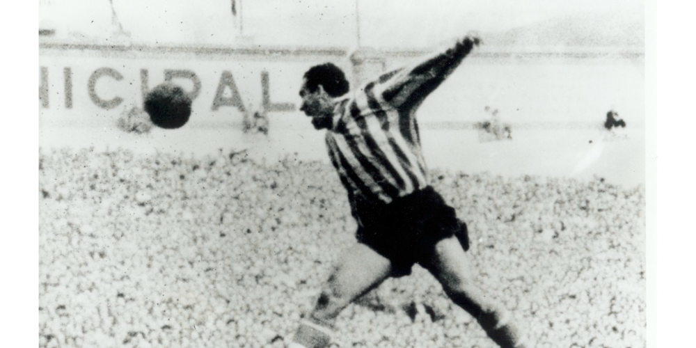

LaLiga: equipos y leyendas
Una página sobre los clubes y los jugadores que forman su historia.
LaLiga: equipos y leyendas
Una página sobre los clubes y los jugadores que forman su historia.
Leyenda del Athletic Club



Telmo Zarraonandia Montoya, conocido como Telmo Zarra, nació en Asua el 20 de enero de 1921 y se convirtió en uno de los grandes goleadores del fútbol español. Llegó al Athletic desde el Erandio en 1940 y permaneció quince temporadas en el primer equipo. Como delantero centro destacó por su capacidad de remate y su eficacia ante la portería. Su nombre quedó unido a la segunda delantera histórica rojiblanca y al célebre gol contra Inglaterra en el Mundial de 1950.
Zarra es el máximo goleador histórico del Athletic Club, con 335 goles oficiales.
En Bilbao compartió ataque con Iriondo, Venancio, Panizo y Gainza, una línea ofensiva que marcó a varias generaciones de aficionados. Ganó la Liga de 1942/43 y cinco Copas, además de una Copa Eva Duarte. También obtuvo seis trofeos Pichichi como máximo goleador de Primera División. La campaña 1950/51, en la que anotó 38 tantos ligueros, representa una de las cumbres de su carrera. Su combinación de olfato, juego aéreo y presencia en el área lo convirtió en una referencia para los delanteros que llegaron después.
Con la selección española alcanzó notoriedad mundial en Brasil en 1950. Su gol frente a Inglaterra aseguró la victoria que dio acceso a la fase final del torneo y pasó a formar parte de la memoria del fútbol nacional. Zarra dejó el Athletic en 1955 y continuó jugando en Indautxu y Barakaldo. La ficha histórica actual del club registra 353 partidos oficiales y 335 goles rojiblancos. Falleció en Bilbao el 23 de febrero de 2006. Su legado conserva un lugar destacado tanto en San Mamés como en la historia del campeonato español.